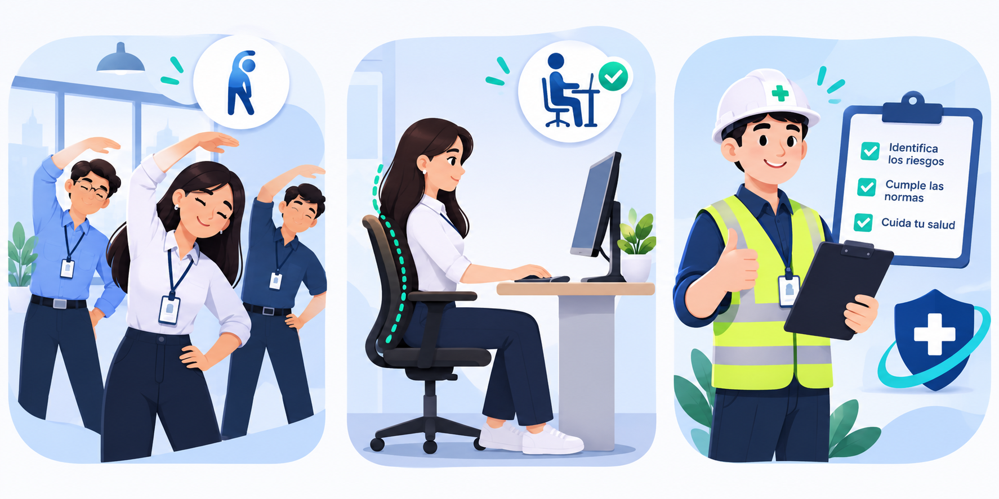
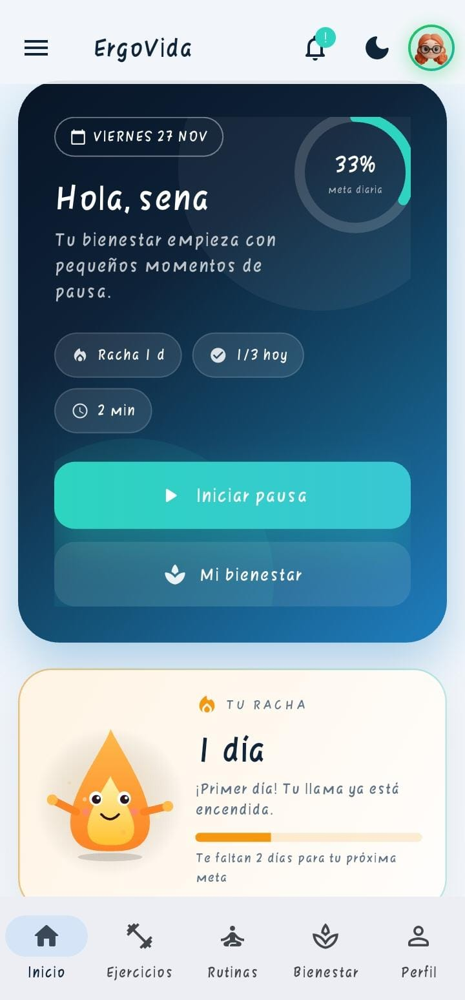
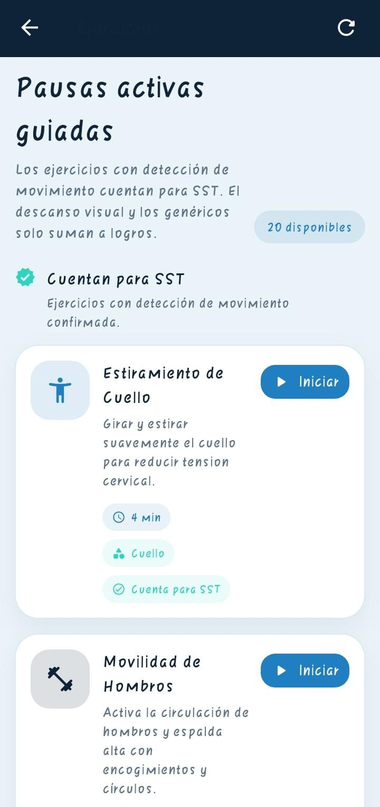
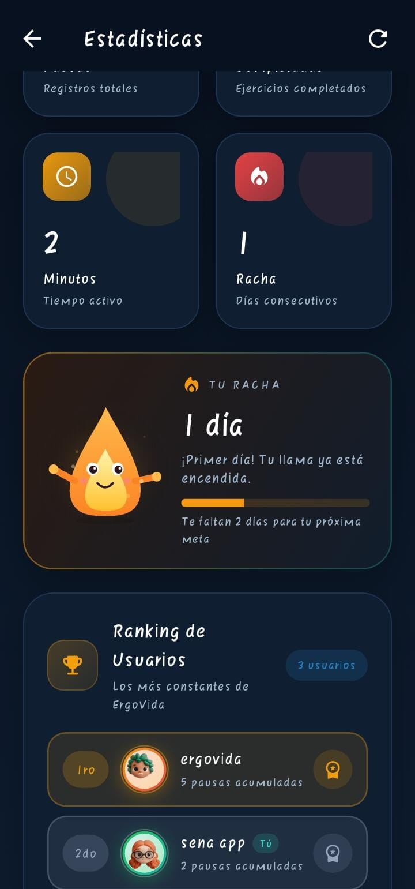

Ergonomía en el puesto
Recordatorios que invitan a revisar postura, distancia del monitor y apoyo de pies y manos.
URL_APK apunte al archivo APK en Drive y que URL_WEB sea la URL real de la app.
Bienestar laboral · SENA
ErgoVida convierte cada pausa en un hábito saludable: ejercicios guiados, recordatorios diarios y un registro claro de tu bienestar, sin salir de tu jornada.
En Android, permite instalar aplicaciones de origen desconocido cuando el sistema lo solicite.
Aviso: Por ahora ErgoVida está disponible para Android y en la web.
Por qué ErgoVida
Pasar muchas horas sentado, repetir movimientos o no tomar descansos puede afectar tu comodidad y tu energía. ErgoVida te ayuda a interrumpir la rutina con pausas cortas y guiadas, diseñadas para la jornada laboral.
ErgoVida complementa, y no reemplaza, los programas de seguridad y salud en el trabajo ni la orientación de un profesional.

Seguridad y salud en el trabajo
Una cultura de prevención se construye con acciones simples y repetibles. ErgoVida apoya esas acciones desde el celular o el navegador, sin cambiar tu forma de trabajar.
Recordatorios que invitan a revisar postura, distancia del monitor y apoyo de pies y manos.
Pausas cortas y guiadas para reducir la rigidez y volver a la tarea con mayor atención.
Un beneficio para cada colaborador y una herramienta de apoyo para quienes lideran SST.
Funciones principales
Una experiencia sencilla, pensada para que la pausa activa se convierta en un hábito y no en una tarea más.
Realiza cada movimiento con orientación visual y recibe ayuda para hacerlo de forma correcta.
La app te avisa cuándo es momento de hacer una pausa activa durante tu jornada.
Consulta cuántas sesiones has completado y mantén constante tu rutina de bienestar.
Resuelve dudas y recibe apoyo rápido sin salir de la aplicación.
Cómo funciona
Descarga el APK en tu Android o abre la versión web desde tu computador. No necesitas registrarte para explorar la página.
Define tus horarios y permite el acceso a la cámara solo cuando quieras usar los ejercicios guiados.
Haz tu pausa activa, completa el ejercicio y consulta tu progreso en el panel de la aplicación.
Vista previa
Una mirada rápida a la experiencia real dentro de la app: menú principal, ejercicios de pausas activas y estadísticas de tu progreso.



Descarga o usa en la web
En Android descarga el APK; en el computador abre la app directamente en el navegador, sin instalar nada.
En Android: permite instalar apps de origen desconocido cuando Android lo pida. En el computador no hay descarga: se abre la versión web.
Preguntas frecuentes
Si necesitas más información, escríbenos al correo que aparece al final de esta página.
No. La cámara se usa solo cuando abres un ejercicio guiado que la requiere. El sistema operativo pedirá tu permiso antes de activarla.
No. El botón de computador abre la versión web de ErgoVida en el navegador. Puedes guardar el enlace en favoritos para volver después.
Por ahora no hay APK para iOS. Puedes usar ErgoVida desde el navegador y consultar esta página para conocer todas las funciones.
Porque el archivo se distribuye fuera de Play Store. Revisa el origen del archivo y acepta la instalación solo si confías en la fuente.
No. Es una herramienta de apoyo para fomentar pausas activas y registrar hábitos. Las decisiones de seguridad y salud deben seguir a cargo del profesional responsable.